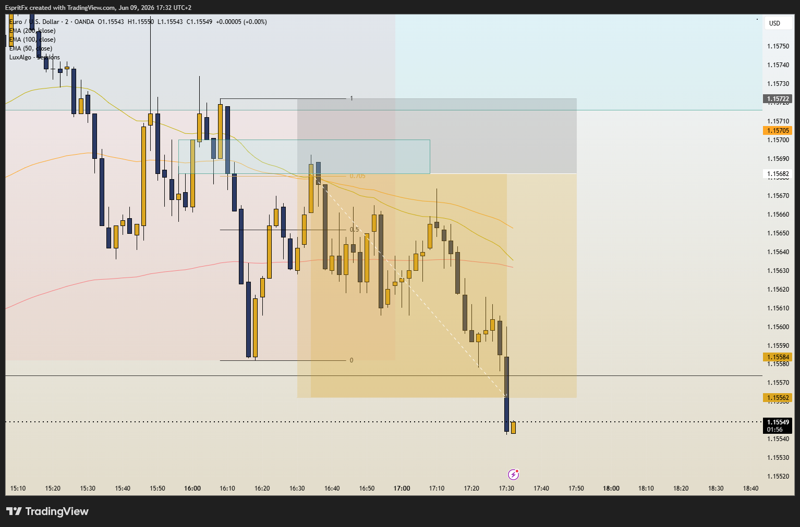

Fais défiler pour les notes + diagrammes 📌
La structure du marché illustre le flux d'ordre général du marché et fournit un cadre mécanique pour lire et comprendre les prix.
Une fois que tu comprends et cartographies correctement la structure du marché, cela augmente massivement la probabilité de comprendre où le prix est le plus susceptible d'aller ensuite, mais aussi le comportement de comment le prix bougera pour y arriver.
Tu dois avoir une méthode systématique pour cartographier la structure du marché de manière cohérente, de la même façon à chaque fois.
Si tu peux être cohérent dans ton approche pour analyser le marché, tu augmentes la probabilité d'obtenir des résultats cohérents dans un environnement de marché incertain.
- Structure de Marché Haussière (Tendance Haussière) -> hauts supérieurs (HH) et bas supérieurs (HL)
- Structure de Marché Baissière (Tendance Baissière) -> hauts inférieurs (LH) et bas inférieurs (LL)
- Hauts et bas de swing peuvent être confirmés avec une Cassure de Structure (BOS)
- Swing High -> point le plus haut qui a causé le swing bas
- Swing Low -> point le plus bas qui a causé le swing haut
- BOS -> cassure de la structure de swing
Après un BOS, attends un pullback sur ce timeframe.

- Fort hauts/bas cassent la structure
- Faible hauts/bas échouent à casser la structure
- Bas Forts -> bas qui causent des hauts (HLs)
- Hauts Forts -> hauts qui causent des bas (LHs)
Se forment généralement avec un mouvement rapide + des bougies plus grandes
Le big money a intérêt à protéger ces points de swing forts.
🎯 Objectif = attraper les HLs et LHs (continuations) et cibler les HHs et LLs (structure faible) = suivre la tendance !
Un changement de tendance survient lorsque le flux d'ordre attendu (EOF) échoue.
Dans une tendance haussière, l'attente est que le prix continuera à former des hauts supérieurs et des bas supérieurs.
Dans une tendance baissière, l'attente est que le prix continuera à former des hauts inférieurs et des bas inférieurs.
- Changement de tendance haussier -> confirmé une fois que le prix casse un swing bas plus haut pour former un swing haut supérieur (BOS haussier).
- Changement de tendance baissier -> confirmé une fois que le prix casse un swing haut plus bas pour former un swing bas inférieur (BOS baissier).
- Swing → BOS → clôture du corps de bougie
- Interne → i-BOS → clôture du corps de bougie
- Fractal → CHoCH (changement de tendance de structure fractale) → cassure de mèche
- CHoCH → signale le début/fin d'un pullback interne
- i-BOS → signale le début/fin d'un pullback swing
Lorsque la structure interne est alignée haussière avec la structure Swing haussière, l'attente est que la tendance interne haussière continuera jusqu'à ce qu'elle casse le haut Swing faible.
Si la structure interne haussière échoue à faire cela et passe baissière, alors l'attente est que la nouvelle tendance interne restera baissière jusqu'à ce qu'elle casse le bas interne faible plus large.